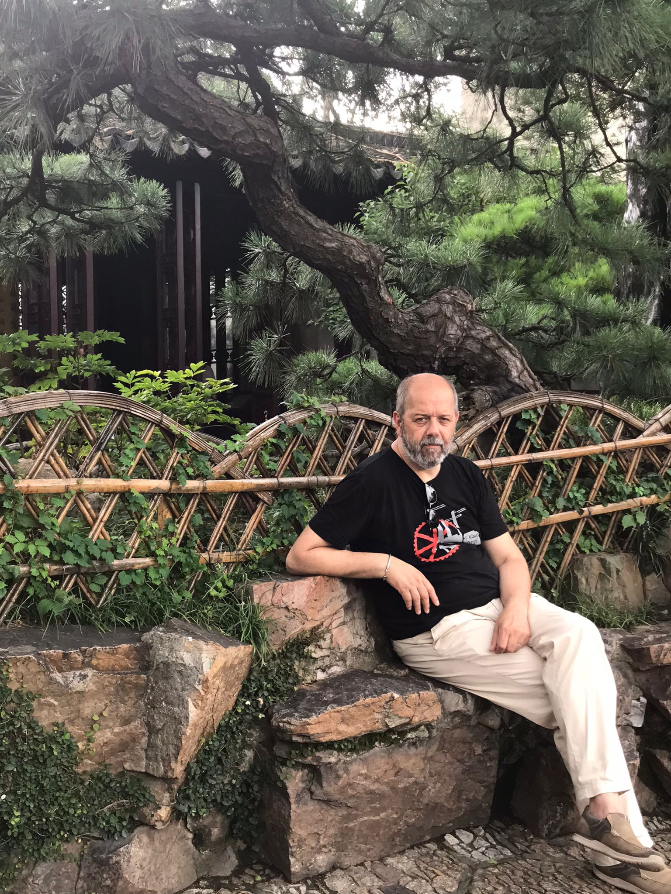

RICCARDO LEONCINI




Other Positions
-
• Permanent Observer in the Scientific Board of the Istituto Gramsci Toscano, Florence.
-
•Research Associate, Research Institute on Sustainable Economic Growth (IRCrES), National Research Council, Milan.
Fields of Interest
Analysis of
technological change and innovation – Local systems
of production – Theory of the firm – Inequality.
Studies
-
•PhD in Economics, Faculty of Economic and Social Studies, University of Manchester.
-
•MA in Economics, Faculty of Economic and Social Studies, University of Manchester.
-
•BA in Political Science (major Economics), Faculty of Political Science, University of Florence.
-
Last Invitations
• Seminar, Dpt of Economics, University of Kerala, India, 17 December 2025
• Workshop, Regolazione dei mercati e innovazione nell'economia italiana e europea, SPISA, 22 November 2025
-
• Seminar, Accademia delle Scienze dell'Istituto di Bologna, 18 November 2025
-
• Seminar, Capire l'economia delle piattaforme, Rete degli Universitari, 23 October 2025
• Summer School, CUPL, Beijing, July 2025.
-
• Conference, Sinergie pubblico-privato e sovranità tecnologica, University of Padua, 4 Dec. 2024
-
• Seminar, Catholic University, Milan, 9 Oct. 2024
Last Conferences
-
• International Conference, Micro Evidence on Innovation and Development, University of Kerala, Trivandrum, 10-11 December 2025
-
• II Conferenza sull'economia civile, 5 June 2025
-
• XXII Annual Workshop CIMET, Lecce, 11-14 June 2025
-
• 65ª RSA SIE, Urbino, 24-26 Oct 2024
-
•SASE Conference, Limerick, 27-29 June 2024
-
•Manifesto and research frontiers for a Renaissance in Economics, Perugia, 20-21 June 2024
•International Joseph A. Schumpeter Society, Gothenburg, 9-11 June 2024
Forthcoming & Mimeo
•
Guidetti
G., Leoncini R.,
Pedrini
G.
(2024),
The
resilience of Italian firms originating
from workers’ buyout.
A counterfactual analysis, mimeo.•Antonioli D., Chioatto E., Guidetti G., Leoncini R., Macaluso M. (2024), Green innovation and training in Italian manufacturing firms, mimeo.
•Guidetti G., Leoncini R., Macaluso M., (2023), Artificial intelligence, robotization and inequality, mimeo.
•Argentiero A., Ferrara M., Leoncini R., Pedrini G., Scuderi R. (2023), Does tax evasion affect innovation decisions?, mimeo.